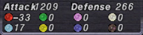
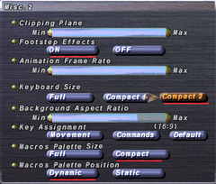

Event-related
- [dev1051][dev1054] Voidwatch has received the following additions and updates:
- Tavnazia Jurisdiction added
- *This content requires the "Chains of Promathia" expansion.
- Aht Urhgan Jurisdiction added
- *This content requires the "Treasures of Aht Urhgan" expansion.
- New varieties of atmacite, abyssite, and periapts have been added.
- The name for the NM Pil's special ability has been changed from "Bishop's Gambit" to "Tabbiyaa Gambit".
- The order of menu options when claiming battle spoils from a Riftworn Pyxis has been adjusted.
- Voidwatch-related terms and phrases have been added to the Glossary of Game Terms.
- Upon entering, players will be asked to select floor 20, 40, 60, 80, or 100 as their ultimate destination.
- The player will not be sent, nor be able to travel to sections beyond the floor specified.
- Upon vanquishing the NMs on the following floors a set number of times (see table), players will receive a key item that may be redeemed for a piece of equipment.
-
- *Astraria will disappear upon a successful transaction.
- *Players may only possess one astrarium of a particular type at any given time.
- Token prices for temporary items have been lowered.
| Category
|
Previous Amount
|
Current Amount
|
| Low-grade Items
|
100
|
50
|
| Medium-grade Items
|
200
|
100
|
| High-grade Items
|
300
|
150
|
|
- [dev1096] Walk of Echoes Adjustments
- Players need no longer wait to receive the Kupofried's medallion key item.
- Temporary items are now obtainable upon entering a Walk.
- *Players will receive a random selection of five or so items.
- Area attacks unleashed by bosses now deal less damage.
- Combat and magic skills will now increase.
- [dev1055] Besieged Adjustments
- Post-KO weakness duration has been reduced from five minutes to one.
- Players will now be eligible to receive experience after being raised even if they were KO'd when the battle concluded.
- Level restrictions no longer apply when beginning a Confrontation in the following areas:
- Dynamis - San d'Oria / Dynamis - Bastok / Dynamis - Windurst / Dynamis - Beaucedine / Dynamis - Xarcabard
-
- Effect duration has been extended.
- Your opponent will be inflicted with Terror during this time.
- Your opponent will not unleash weapon skills immediately after the effect wears off.
- The ??? targets from which frigicite may be obtained will always be visible.
- The quest NMs located near these targets will no longer be stationary.
- Methods of detection for these NMs have been adjusted.
- These NMs no longer use Doom.
- [dev1095] Additional Limit Break Quest Adjustments
- In the following quests, each testimony possessed will grant players three attempts at the corresponding battlefield:
- *The item will disappear upon trading it for the third time.
- Shattering Stars / The Beast Within / Breaking the Bonds of Fate / Achieving True Power / A Furious Finale / Survival of the Wisest
- The Port Jeuno NPC Shami now explains the orb exchange process only the first time players talk to him.
Battle-related
- The following job adjustments and refinements have been implemented:
-
-
- Recast time has been reduced from fifteen minutes to five.
- Additional merit points will now increase the chance of a threefold attack by 5% per point.
-
- Recast time has been reduced from twenty minutes to ten.
- Additional merits no longer reduce casting time, but instead increase HP granted by 5% per point.
- Recast time has been reduced from twenty minutes to ten.
- Additional merits no longer reduce casting time, but instead increase MP granted by 5% per point.
-
- Recast time has been reduced from fifteen minutes to five.
- Additional merit points now increase the chance of a fourfold attack by 5% per merit point.
- Recast time has been reduced from ten minutes to two.
- Additional merit points no longer reduce recast time, but instead raise the chance of Treasure Hunter leveling up by 25% per point.
-
- Recast time has been reduced from twenty minutes to ten.
- Additional merit points no longer reduce recast time, but instead extend duration by an additional five seconds per point.
- Recast time has been reduced from twenty minutes to ten.
- Additional merit points no longer reduce recast time, but instead increase MP recovery by an additional 5% per point.
-
- Recast time has been reduced from fifteen minutes to five.
- Additional merit points no longer reduce recast time, but instead reduce casting time for dark magic spells by an additional 10% per point.
- Recast time has been reduced from fifteen minutes to five.
- Additional merit points no longer reduce recast time, but instead increase accuracy by an additional five points per merit.
-
- Recast time has been reduced from fifteen minutes to five.
- Additional merit points no longer affect casting time, but instead increase accuracy by five percent per point.
- Recast time has been reduced from fifteen minutes to five.
- Duration has been extended from one minute to three.
- Additional merit points no longer affect casting time, but instead extend duration by ten seconds per point.
- Certain familiars summonable with the "Call Beast" ability have been adjusted as follows:
-
- The maximum level for the Treasure Hunter effect has been revised to level one.
- The maximum level for the Treasure Hunter effect has been revised to level one.
- Call duration has been extended from 90 minutes to 120 minutes.
- Attack strength has been increased.
-
- Recast time has been reduced from twenty minutes to ten.
- Additional merit points no longer affect recast time, but instead increase the chance of extremely rapid spellcasting by 25% per point.
- Recast time has been reduced from twenty minutes to ten.
- Additional merit points no longer reduce recast time, but instead increase song accuracy by 25% per point.
-
- Recast time has been reduced from twenty minutes to ten.
- Additional merit points no longer affect recast time, but instead increase ranged attack by 5% per point.
-
- Amount of TP returned has been increased from 20 to 40.
-
- The Super Jump enmity reduction granted to the closest party member behind the dragoon has been increased.
- Also grants Regen to the wyvern.
- Heavenward Howl's HP/MP absorption additional effect now applies to attacks with secondary as well as main weapons.
- Elemental spirit perpetuation cost has been adjusted as follows:
- * The values listed assume that Auto Refresh is in effect.
| Level
|
Previous Cost
|
Current Cost
|
| 1
|
2
|
1
|
| 2
|
| 3
|
| 4
|
| 5
|
3
|
| 6
|
| 7
|
| 8
|
| 9
|
4
|
| 10
|
| 11
|
| 12
|
| 13
|
| 14
|
5
|
| 15
|
| 16
|
| 17
|
| 18
|
6
|
| 19
|
2
|
| 20
|
| 21
|
| 22
|
| 23
|
7
|
| 24
|
| 25
|
6
|
1
|
| 26
|
| 27
|
7
|
| 28
|
| 29
|
| 30
|
| 31
|
| 32
|
8
|
| 33
|
| 34
|
| 35
|
| 36
|
9
|
| 37
|
| 38
|
2
|
| 39
|
| 40
|
10
|
| 41
|
| 42
|
| 43
|
| 44
|
| 45
|
11
|
| 46
|
| 47
|
| 48
|
| 49
|
12
|
| 50
|
|
|
| Level
|
Previous Cost
|
Current Cost
|
| 51
|
12
|
2
|
| 52
|
| 53
|
| 54
|
13
|
| 55
|
| 56
|
| 57
|
3
|
| 58
|
14
|
| 59
|
| 60
|
| 61
|
| 62
|
| 63
|
15
|
| 64
|
| 65
|
| 66
|
| 67
|
16
|
| 68
|
| 69
|
| 70
|
| 71
|
| 72
|
17
|
| 73
|
| 74
|
| 75
|
4
|
| 76
|
| 77
|
| 78
|
| 79
|
| 80
|
| 81
|
18
|
5
|
| 82
|
| 83
|
| 84
|
| 85
|
| 86
|
| 87
|
| 88
|
| 89
|
| 90
|
17
|
4
|
| 91
|
5
|
| 92
|
| 93
|
| 94
|
| 95
|
18
|
| 96
|
| 97
|
| 98
|
| 99
|
|
|
- The "Elemental MP Cost" merit point enhancement has been replaced by "Summoning Magic Cast Time," which point will shorten summoning magic casting time by an additional 5 percent per point.
-
- Maximum damage reduction for enemy special attacks has been increased from 10% to 40%.
- Additional Earth Maneuvers now increase the number of special attacks mitigated rather than the percentage of damage reduction.
| Earth Maneuvers
|
Specials Mitigated
|
| 0
|
1
|
| 1
|
2
|
| 2
|
4
|
| 3
|
6
|
|
- [dev1087][dev1102] New Magic Spells
-
- Arise (WHM Lv.99)
- Revives and bestows a Reraise effect upon target PC.
- Meteor (BLM Lv.99; Elemental Seal must be in effect)
- Summons a meteor to deal damage to enemies within an area of effect.
- [dev1094] Cure Spell Adjustments
- At high skill levels, Cure spells now heal more HP than before, while low skill levels see minimal benefit. The degree to which Healing Magic skill affects HP healed varies by spell, with Cure I-IV seeing the most significant adjustments.
- Cure I-IV: Amount of HP recovered may increase by as much as 1.4 times.
- Cure V-VI: Minimal adjustments.
- *Curaga I-V and Cura I-III will remain unchanged.
- [dev1092] Save TP Adjustment
- Save TP is now treated as a minimum guaranteed TP value that will always be obtained from a weapon skill.
- Examples, assuming a Save TP value of 20:
- 25 TP weapon skill: 25 TP obtained.
- 15 TP weapon skill: 20 TP obtained.
- Missed (0 TP) weapon skill: 20 TP obtained.
Item-related
- Various new items have been added.
- [dev1045] Crafting Skill Cap Increase
- The maximum attainable crafting level has been increased to Expert (110).
- The maximum unrestricted crafting level has been increased from Craftsman (60) to Artisan (70).
- New synthesis recipes have been added.
- Guild points will no longer be lost when revoking your contract with a particular guild.
- For Guildworkers' Union quests, guild representatives will no longer accept items beyond the maximum guild point cap.
- *HQ items will be accepted with priority over NQ items.
- *HQ quantity will remain unchanged.
- [dev1045] Synergy Adjustments
- The synergy crucible key item may now be purchased from Synergy Engineer NPCs for 100 gil.
- *You cannot purchase a synergy crucible while undertaking the quest "Synergistic Pursuits".
- A new quest "Synergy Support" will be available to players possessing a synergy crucible.
- New synergy recipes have been added as follows.
- The following pieces of HQ equipment are augmentable via synergy with the "Abdhaljs's Honor" item:
- Huginn Coronet / Huginn Gantlets / Huginn Hose / Huginn Gambieras / Tenryu Somen +1 / Tenryu Tekko +1 / Tenryu Hakama +1 / Tenryu Sune-Ate +1 / Khepri Bonnet / Khepri Wristbands / Khepri Kecks / Khepri Gamashes / Spurrina Coif / Spurrina Gages / Spurrina Slops / Spurrina Nails / Iaso Mitra / Iaso Cuffs / Iaso Tights / Iaso Boots
- Huginn Haubert / Tenryu Domaru +1 / Khepri Jacket / Spurrina Doublet / Iaso Bliaut
- [dev1098] New Wares for Merchant NPCs
-
- Regen / Regen II / Sleepga / Baramnesia / Baramnesra
- [dev1098] Wormy Broth is now available from the merchant below:
-
- [dev1104] Porter Moogle Service Expansion
- The items below are now storable via the Moogle Porter service.
- Dream Bell / Dream Bell +1 / Dream Hat / Dream Hat +1 / Dream Robe / Dream Robe +1 / Dream Trousers / Dream Trousers +1 / Dream Pants / Dream Pants +1 Dream Boots / Dream Boots +1 / Snowman Cap / Couronne des Etoiles / Silberkranz / Leafberry Wreath
System-related
- [dev1099] Equipment Menu Adjustment
- The equipment menu can now display four-digit attack and defense values.
- 
- Various measures have been taken to prevent the Xbox 360 version from freezing.
- [dev1097] A new keyboard control scheme has been added to FINAL FANTASY XI.
- 
- The new input method is designed for notebook PCs and compact keyboards lacking a numeric keypad, to be used with a standard two-button wheel mouse.
- Players will be able to choose from the following three input methods for moving their character, adjusting the camera, and navigating menus.
- [Standard]: Full keyboard and mouse
- [Compact 1]: Compact keyboard and mouse
- [Compact 2]: New control scheme with support for wheel mouse and keyboard/mouse combination controls
- *The above settings may be accessed from the main menu under "Config" -> "Misc. 2"
- *View the details of this control scheme.
- [dev1100] A new control scheme, "Compact 2," has been added to the "Keyboard Size" options in the "Misc. 2" menu under "Config".
- All new characters will start with "Compact 2" as the default input option.
Resolved Issues
- The following issues have been resolved:
- An issue in the quest "Hat in Hand" wherein talking to a particular NPC had no effect.
- An issue in the same quest wherein abandoning the quest would cause the victory fanfare to play.
- An issue wherein the quest "Coming Full Circle" would be rendered uncompletable by performing certain actions.
- An issue in the quest "The Wyrm God" wherein being struck by area effect magic during a cutscene would cause the screen to freeze.
- An issue with Nyzul Isle missions wherein the following status benefits did not affect close-range attacks:
- Flurry / Increased Attack Speed
- An issue with Nyzul Isle Uncharted Region missions wherein only the party leader would be allowed to enter the battlefield if that leader possessed imbued items.
- An issue with Nyzul Isle Uncharted Region missions wherein certain NM names appeared with improper articles in battle messages.
- An issue with Nyzul Isle Uncharted Region missions wherein the floor numbers referenced by the NPC Sorrowful Sage were inaccurate.
- An issue with Voidwatch wherein non-participating players being drawn in by NMs would also effect participating players.
- An issue wherein the Voidwatch monster Goji would use its special ability Bloody Claw in rapid succession.
- An issue wherein players would not be credited with Imperial Standing if they were in a KO'd state at the conclusion of battle.
- An issue wherein pets would not react when the monster Vanguard Ogresoother (Dynamis - Valkurm, Dynamis - Buburimu, Dynamis - Qufim) detected a player.
- An issue with Dynamis wherein striking the weaknesses of Goblin, Demon, and Fomor family monsters would occasionally fail to yield Dynamis currency.
- An issue wherein the Abyssea-Konschtat monsters Ephemeral Clionid and Ephemeral Limule would use magic not meant to be accessible to them.
- An issue wherein the warrior trait Savagery would occasionally reduce the attack bonus granted by Warcry.
- An issue wherein the white mage ability Divine Caress would, under certain conditions, also affect untargeted party members.
- An issue wherein the effects of Manawell and Spontaneity would continue to affect players even after manually removing their status icons.
- An issue wherein the status icon for the dark knight ability Dark Seal would not display properly.
- An issue wherein the list of targetable alliance members would not display after selecting Curing Waltz from the command menu.
- An issue wherein, if a blue mage with the thief subjob had learned both the blue mage job trait Treasure Hunter and thief job trait Treasure Hunter II, the latter would not activate.
- An issue wherein, under certain conditions, pets would occasionally attack monsters of their own accord immediately after the enemies had respawned.
- An issue wherein the animation of the weapon skill Exenterator was overly long and would prevent the following standard attack animation from displaying properly.
- An issue wherein the duration of the weapon skill Exenterator's additional effect would not vary with TP.
- An issue wherein PCs would vanish after defeating spheroid enemies with the weapon skill Blade: Shun.
- An issue wherein the maximum number of guild points obtainable for delivering the following items differed from their intended values:
- Puls / Orange Juice / Roast Carp / Sis Kebabi / Boiled Cockatrice / Pepperoni / Salmon Meuniere / Shark Fin Soup
- An issue wherein the item Karni Yarik +1 was undeliverable during guild quests.
- An issue wherein equipping either Unkai Haidate +1 or Unkai Haidate +2 would grant an enhanced Hasso effect even when Hasso was not in use.
- An issue wherein the icon for the item Eggplant was incorrect in the Windows and Xbox 360 versions of the game.
- An issue wherein the level sync and Campaign battle icons would display in a low resolution for the Windows and Xbox 360 versions of the game.
- An issue wherein the event replay for the quest "Babban Ny Mheillea" could not be viewed at the Goblin Footprints in West Sarutabaruta.
- An issue wherein the following item names would not function properly with the /translate command or macros:
- Manigordo Tusk / Nares Saio / Nares Cuffs / Nares Trews / Nares Clogs / Dilettante's Grip
Known Issues
- Once the total number of logouts/disconnections for a Legion alliance reaches the number of battle participants, all players will be returned to the lobby.
- The icon for the item Tussle Breeches does not display correctly under certain conditions.
- The item Gardyloo Pants is undergoing attribute adjustments and thus cannot be obtained.
The final chapter in the Voidwatch saga was scheduled to be implemented in this update, but has been delayed for a few weeks in order to further balance the battle content.
|

{kind=link}
{kind=link}
{kind=link}
{kind=link}
{kind=link}
{kind=link}
{kind=link}
{kind=link}
{kind=link}
{kind=link}
{kind=link}
{kind=link}
{kind=link}
{kind=link}
{kind=link}
{kind=link}
{kind=link}
{kind=link}
{kind=link}
{kind=link}